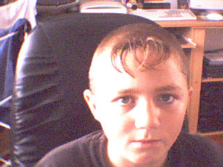

Beginners Editor V3.0
I call this beginners editor because you dont really need to know html to make a page!
The last update will probably be V5 but theres got to be a V4 first which would most probably be done in a week or so. It will include asp support, frames and forms.
Also i did borrow 3 bits of this code
Color Chooser from http://www.Planet-Source-Code.com/vb/scripts/ShowCode.asp?txtCodeId=8821&lngWId=1
Table Creator from http://www.Planet-Source-Code.com/vb/scripts/ShowCode.asp?txtCodeId=34863&lngWId=1
And the function to copy the images from the image directory to the saved html file directory from Steve Bailey
www.spokesy.co.nr
flames_of_fire_2k3@hotmail.com